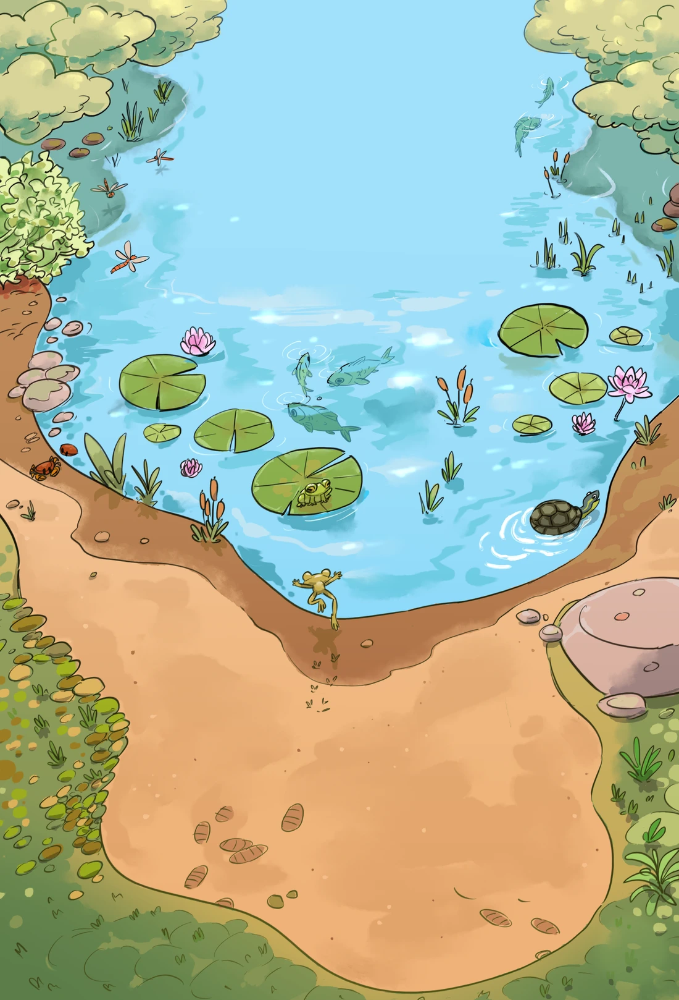
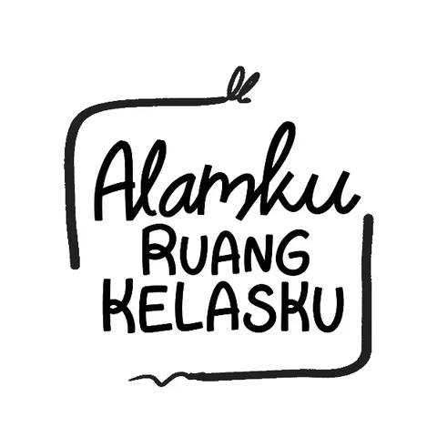

Books & learning kits · Dalam pengembangan
Alamku
Ruang Kelasku.
Belajar bisa dimulai dari sesuatu yang dekat: air, daun, atau hewan kecil di sekitar kita.
Cerita dan pengalaman baru sedang kami siapkan.
Intip sedikit ↓

Belajar mengenal alam, tumbuh untuk menjaganya.
Alamku Ruang Kelasku dikembangkan bersama Lendo Novo Foundation untuk mendukung pendidikan anak sebagai generasi penerus, sekaligus mengajak keluarga terlibat dalam pelestarian alam dan lingkungan hidup.
Preview · Dalam pengembangan
Digital companion.
Sedikit cuplikan dari pengalaman digital yang sedang kami eksplorasi. Rasa ingin tahunya berlanjut di dunia nyata.
Ada yang mulai hidup.
Ini baru sekilas. Masih banyak yang sedang kami siapkan.
Aplikasi masih dikembangkan dan belum tersedia untuk dicoba atau diunduh.
Dalam tahap pengembangan
Bawa eksplorasi ini lebih jauh.
Kami mengajak sekolah, komunitas, dan mitra yang peduli pendidikan serta lingkungan untuk ikut menumbuhkan pengalaman ini bersama.
Masih ada cerita lainnya.
← Kembali ke Storygrove